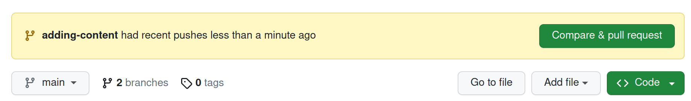

Github Pages with Quarto
Quarto is an “open-source scientific and technical publishing system built on Pandoc”. What does that mean?
It means that you can use a simple text file to create documents like blogs, papers, books etc. This blog will be generated using Quarto. Quarto takes simple text files written in markdown and converts those documents into a number of different formats.
Quarto allows you to embed code written in R, python, julia and Observable JS into your documents and that code will be executable. This makes it easy to share code for analysis or teaching or reminding yourself how things work!.
Below I’ll document how I set up this blog on Github pages using Quarto.
Preliminaries
First you’ll need to have the version control sofware git installed on your system. If you’re not familiar with git then there’s some good teaching here. Once you have git installed you have to set your identity.
git config --global user.name "Your Name"
git config --global user.email "YourEmail@XYZ.com"The email you use should be the same one you’ll use when you sign up for Github.
You can also set a default branch for your code. I use main for this. This is where the final code for the blog will live.
git config --global init.defaultBranch mainYou’ll also need an account on Github. Github provides a free service called Github pages that allows you to host a free website.
You’ll also need to install Quarto.
Once we have git & Quarto installed and a Github account ready the workflow we’ll follow here is:
- Create a blog repository on Github
- Copy (clone) that repository to our local computer
- Setup the blog structure in the local repository using Quarto
- Create content for the blog using Quarto
- Push the content to the online repository
Once we’ve done the first three steps the last two steps can be repeated as we add new blog posts.
I’ll be using a Unix based operating system either Mac OSX or linux & we’ll be using the command line. If you want to follow the process on Windows you’ll probably need to change a few commands used to create files or change directories from Unix commands to Windows commands. The git and quarto commands will all remain the same.
Once you have installed git and set up your git identity go to Github, create a free account and set up the various security options. Install Quarto on your computer.
Github set up
On Github create a new repo named your_github_username.github.io replacing your_github_username with your actual Github username. Do not add a README or license file just now.
On your local computer change to the directory you want to use for your blog and clone the Github repo into that directory.
cd ~/blog_directory
git clone git@github.com:THE_REPO_ADDRESSif you’re using ssh.
cd ~/blog_directory
git clone https://github.com/THE_REPO_ADDRESSif you’re using https.
This will download the files on Github into the local directory. You’ll probably get a warning like:
warning: You appear to have cloned an empty repository.That’s ok… you have cloned an empty repository!
Create the blog
There are full instructions here.
Change into the local repo you just cloned.
cd ~/blog_directory/your_github_username.github.ioCreate a local copy of your blog by typing:
quarto create-project --type website:blogQuarto will create several files and directories required to create the blog:
- _quarto.yml
- index.qmd
- about.qmd
- posts/
- posts/_metadata.yml
- styles.css
Add an empty file named .nojekyll at the top level:
# change directory
cd your_github_username.github.io
# add a file
touch .nojekyllThis is required so that Github pages will serve our blog properly later. See the Github pages section here.
We also need to set the output directory in the _quarto.yml file so the top of the file reads:
project:
type: website
output-dir: docsIf you want to add social media details you can make edits to the about.qmd file (see the webpage above).
Setting git to track the blog
Move into the new directory created by Quarto:
cd your_github_username.github.ioType git init. This will tell git to start tracking the files in the blog directory. You can make sure this is working by typing git status & git should list all the directories and files in the your_github_username.github.io directory. You should also see that you are on the main branch.
Adding a content branch
Git allows us to create different branches for projects we are working on. At the moment we only have one branch in our blog project - the main branch. For adding content etc we do not want to work on the main branch; we want the main branch to be the destination for code/posts we know we want to publish.
On your local machine create a new branch in the repo called e.g. adding-content.
git checkout -b adding-contentYou should see a message Switched to a new branch 'adding-content'.
As you create content you will create that content on the adding-content branch. Once you’re happy with that content you can merge the adding-content and main branches. That way you’re never going to ‘break’ the main branch (the stuff you will actually blog) with code/content that doesn’t work.
Before we go any further we’ll push everything we have done to the adding-content branch on our local machine.
# make sure we're on the adding-content branch
git status
# add all the files & changes; . means add everything
git add .
# commit the changes to the git repo
git commit -m "started adding-content branch"
# check
git statusYou should see a message:
On branch adding-content
nothing to commit, working tree cleanAdding content
The workflow to create content is to write in markdown and then use the tools in Quarto to render the markdown to html. If you made your blog repo as above with Quarto then Quarto will take care of adding blog posts to the index page of your blog.
Create a new Quarto file written in markdown. As you’re doing so you can check what the page will look like using the Render button in RStudio orVS Code if you’re using either of these for your writing.
Once you’re satisfied with the markdown file create a new folder in the /posts directory of your blog repo. Give the folder an informative name.
# change to posts dir
cd your_github.username.github.io/posts
# create new dir to hold current content
mkdir quarto_github_pages
# move .qmd file to posts/new_dir
cp path/to/content.qmd posts/quarto_github_pagesNow we can add this file to git.
# check your on adding content
git status
# add the file
git add posts/quarto_github_pages/content.qmd
# commit the file & add a message
git commit -m "added first post to blog"
# check all is well
git statusRender the site
Now we have some content we can use quarto to render the actual site. Make sure you are in the top level directory of your blog (e.g. your_github_username.github.io) and type quarto preview to preview the site.
If it all looks good press ctrl+c to stop the site being served.
You can now render the site with quarto render. This will add several new files & directories.
Add these to the adding-content branch following the git workflow.
git status # make sure you are on adding-content branch
git add .
git status
git commit -m "some useful commit message"
git statusNow we’re ready to send the site to Github.
Push blog to Github
We want to push the files we have created to the adding-content branch online.
git push origin adding-contentGo to Github and log in if you have to. You should see a message that the adding-content branch has had content pushed to it.

Press the green button and follow the prompts to merge your changes to the main branch on Github.
On the GitHub page for your repo go to Settings (top right of the page) & scroll down until you see the section for GitHub pages. Click on the Source (it probably says Deploy from a branch) & select /docs.

Press save. This tells GitHub Pages to look in themain branch of the project and in the docs directory for files to serve.
Syncing online and local
So far we have made all our changes to the local adding-content branch, sent these changes to the adding-content branch online and merged those changes with the main branch online. Our local main branch needs to be synchronised to the online main branch.
In your local blog directory checkout your main branch.
git checkout mainNow pull the content from the online main branch down to your local machine.
git pull origin mainYour local main branch and your online main branch will now be the same.
Workflow process
A lot of what we did above was once off. For subsequent posts we will:
- Draft content in markdown
- Track that content on the local
adding-contentbranch
git checkout adding-content
git status # make sure you're on adding-content
git add XYZ
git status
git commit -m "some commit message"
git status- Push the
adding-contentbranch to Github when we’re ready to publish the page
git push origin adding-content- Merge the changes to the
mainbranch online using a Github pull request
Github should automatically serve the page we created.
- Pull the finalised
mainbranch from Github back to the local machine
git checkout main
git pull origin main